10.4 A Graphical Editor, Revisited
Chapter 5.10 is about the design of an interactive graphical one-line editor. It suggests two different ways to represent the state of the editor and urges you to explore both: a structure that contains a pair of strings or a structure that combines a string with an index to a current position (see exercise 87).
A third alternative is to use structures that combine two lists of 1Strings:
(define-struct editor [pre post])
; An Editor is a structure:
; (make-editor Lo1S Lo1S)
; An Lo1S is one of:
; -- '()
; -- (cons 1String Lo1S)
Before you wonder why, let’s make up two data examples:
(define good
(cons "g" (cons "o" (cons "o" (cons "d" '())))))
(define all
(cons "a" (cons "l" (cons "l" '()))))
(define lla
(cons "l" (cons "l" (cons "a" '()))))
; data example 1:
(make-editor all good)
; data example 2:
(make-editor lla good)
The two examples demonstrate how important it is to write down an interpretation. While the two fields of an editor clearly represent the letters to the left and right of the cursor, the two examples demonstrate that there are at least two ways to interpret the structure types:
1. (make-editor pre post) could mean the letters in pre precede the cursor and those in post succeed it and that the combined text is
(string-append (implode pre) (implode post))
Recall that implode turns a list of 1Strings into a String.
2. (make-editor pre post) could equally well mean that the letters in pre precede the cursor in reverse order. If so, we obtain the text in the displayed editor like this:
The function rev must consume a list of 1Strings and reverse it.
Even without a complete definition for rev, you can imagine how it works. Use this understanding to make sure you understand that translating the first data example into information according to the first interpretation and treating the second data example according to the second interpretation yields the same editor display:
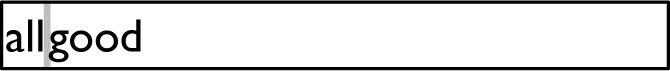
Both interpretations are fine choices, but it turns out that using the second one greatly simplifies the design of the program. The rest of this section demonstrates this point, illustrating the use of lists inside of structures at the same time. To appreciate the lesson properly, you should have solved the exercises in chapter 5.10.
Let’s start with rev because we clearly need this function to make sense out of the data definition. Its header material is straightforward:
; Lo1s -> Lo1s
; produces a reverse version of the given list
(check-expect
(rev (cons "a" (cons "b" (cons "c" '()))))
(cons "c" (cons "b" (cons "a" '()))))
(define (rev l) l)
For good measure, we have added one “obvious” example as a test case. You may want to add some extra examples just to make sure you understand what is needed.
The template for rev is the usual list template:
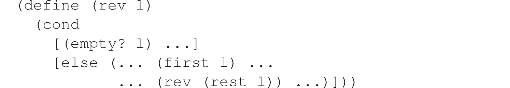
There are two cases, and the second case comes with several selector expressions and a self-referential one.
Filling in the template is easy for the first clause: the reverse version of the empty list is the empty list. For the second clause, we once again use the coding questions:
• (first l) is the first item on the list of 1Strings;
• (rest l) is the rest of the list; and
• (rev (rest l)) is the reverse of the rest of the list.
Stop! Try to finish the design of rev with these hints.
If these hints leave you stuck, remember to create a table from the examples. Figure 71 shows the table for two examples: (cons "a" '()) and (cons "a" (cons "b" (cons "c" '()))). The second example is particularly illustrative. A look at the next to last column shows that (rev (rest l)) accomplishes most of the work by producing (cons "c" (cons "b" '())). Since the desired result is (cons "c" (cons "b" (cons "a" '()))), rev must somehow add "a" to the end of the result of the recursion. Indeed, because (rev (rest l)) is always the reverse of the rest of the list, it clearly suffices to add (first l) to its end. While we don’t have a function that adds items to the end of a list, we can wish for it and use it to complete the function definition:
(define (rev l)
(cond
[(empty? l) '()]
[else (add-at-end (rev (rest l)) (first l))]))
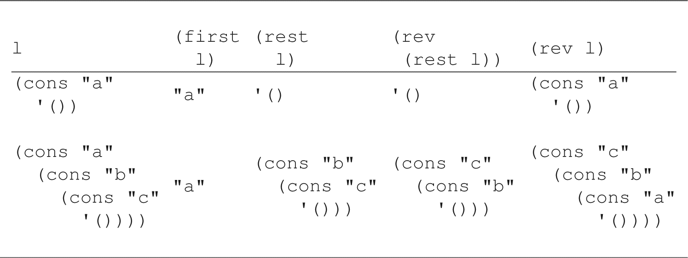
Figure 71: Tabulating for rev
Here is the extended wish-list entry for add-at-end:
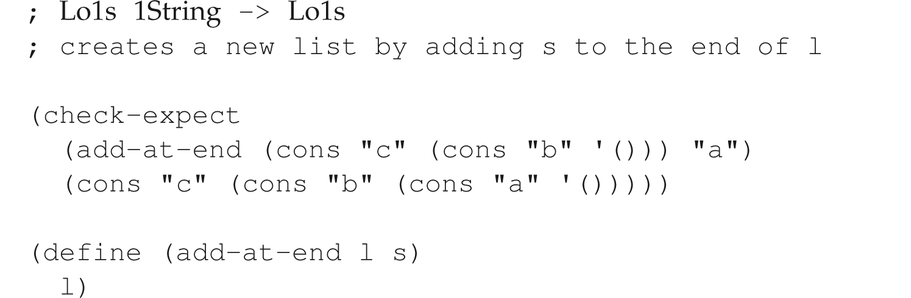
It is “extended” because it comes with an example formulated as a test case. The example is derived from the example for rev, and indeed, it is precisely the example that motivates the wish-list entry. Make up an example where add-at-end consumes an empty list before you read on.
Since add-at-end is also a list-processing function, the template is just a renaming of the one you know so well now:
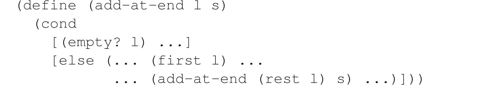
To complete it into a function definition, we proceed according to the recipe questions for step 5. Our first question is to formulate an answer for the “basic” case, that is, the first case here. If you worked through the suggested exercise, you know that the result of
(add-at-end '() s)
is always (cons s '()). After all, the result must be a list and the list must contain the given 1String.
The next two questions concern the “complex” or “self-referential” case. We know what the expressions in the second cond line compute: the first expression extracts the first 1String from the given list and the second expression “creates a new list by adding s to the end of (rest l).” That is, the purpose statement dictates what the function must produce here. From here, it is clear that the function must add (first l) back to the result of the recursion:
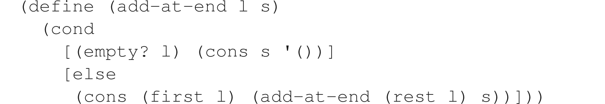
Run the tests-as-examples to reassure yourself that this function works and that therefore rev works, too. Of course, you shouldn’t be surprised to find out that BSL already provides a function that reverses any given list, including lists of 1Strings. And naturally, it is called reverse.
Exercise 177. Design the function create-editor. The function consumes two strings and produces an Editor. The first string is the text to the left of the cursor and the second string is the text to the right of the cursor. The rest of the section relies on this function. 
At this point, you should have a complete understanding of our data representation for the graphical one-line editor. Following the design strategy for interactive programs from chapter 3.6, you should define physical constants—the width and height of the editor, for example—and graphical constants—for example, the cursor. Here are ours:
(define HEIGHT 20) ; the height of the editor
(define WIDTH 200) ; its width
(define FONT-SIZE 16) ; the font size
(define FONT-COLOR "black") ; the font color
(define MT (empty-scene WIDTH HEIGHT))
(define CURSOR (rectangle 1 HEIGHT "solid" "red"))
The important point, however, is to write down the wish list for your event handler(s) and your function that draws the state of the editor. Recall that the 2htdp/universe library dictates the header material for these functions:
; Editor -> Image
; renders an editor as an image of the two texts
; separated by the cursor
(define (editor-render e) MT)
; Editor KeyEvent -> Editor
; deals with a key event, given some editor
(define (editor-kh ed ke) ed)(index "editor-kh")
In addition, chapter 3.6 demands that you write down a main function for your program:
; main : String -> Editor
; launches the editor given some initial string
(define (main s)
(big-bang (create-editor s "")
[on-key editor-kh]
[to-draw editor-render]))
Reread exercise 177 to determine the initial editor for this program.
While it does not matter which wish you tackle next, we choose to design editor-kh first and editor-render second. Since we have the header material, let’s explain the functioning of the key-event handler with two examples:
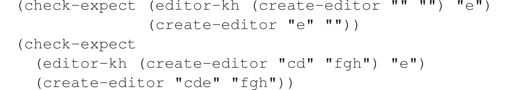
Both of these examples demonstrate what happens when you press the letter “e” on your keyboard. The computer runs the function editor-kh on the current state of the editor and "e". In the first example, the editor is empty, which means that the result is an editor with just the letter "e" in it followed by the cursor. In the second example, the cursor is between the strings "cd" and "fgh", and therefore the result is an editor with the cursor between "cde" and "fgh". In short, the function always inserts any normal letter at the cursor position.
Before you read on, you should make up examples that illustrate how editor-kh works when you press the backspace ("\b") key to delete some letter, the "left" and "right" arrow keys to move the cursor, or some other arrow keys. In all cases, consider what should happen when the editor is empty, when the cursor is at the left end or right end of the non-empty string in the editor, and when it is in the middle. Even though you are not working with intervals here, it is still a good idea to develop examples for the “extreme” cases.
Once you have test cases, it is time to develop the template. In the case of editor-kh you are working with a function that consumes two complex forms of data: one is a structure containing lists, the other one is a large enumeration of strings. Generally speaking, this design case calls for an improved design recipe; but in cases like these, it is also clear that you should deal with one of the inputs first, namely, the keystroke.
Having said that, the template is just a large cond expression for checking which KeyEvent the function received:
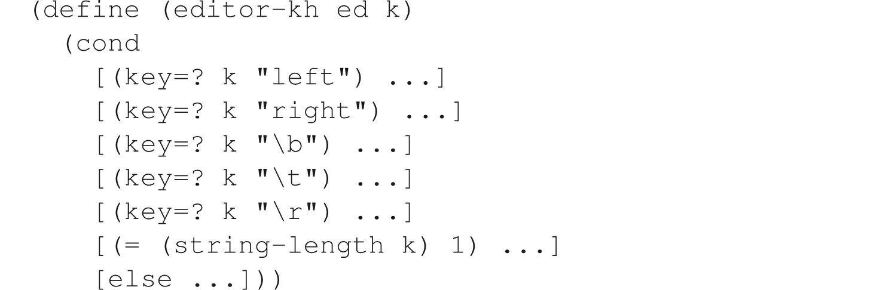
The cond expression doesn’t quite match the data definition for KeyEvent because some KeyEvents need special attention ("left", "\b", and so on), some need to be ignored because they are special ("\t" and "\r"), and some should be classified into one large group (ordinary keys).
Exercise 178. Explain why the template for editor-kh deals with "\t" and "\r" before it checks for strings of length 1.
For the fifth step—the definition of the function—we tackle each clause in the conditional separately. The first clause demands a result that moves the cursor and leaves the string content of the editor alone. So does the second clause. The third clause, however, demands the deletion of a letter from the editor’s content—if there is a letter. Last, the sixth cond clause concerns the addition of letters at the cursor position. Following the first basic guideline, we make extensive use of a wish-list and imagine one function per task:
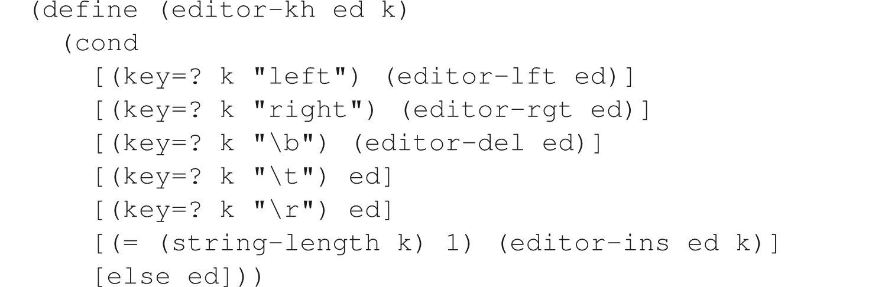
As you can tell from the definition of editor-kh, three of the four wish-list functions have the same signature:
; Editor -> Editor
The last one takes two arguments instead of one:
; Editor 1String -> Editor
We leave the proper formulation of wishes for the first three functions to you and focus on the fourth one.
Let’s start with a purpose statement and a function header:
; insert the 1String k between pre and post
(define (editor-ins ed k)
ed)
The purpose is straight out of the problem statement. For the construction of a function header, we need an instance of Editor. Since pre and post are the pieces of the current one, we just put them back together.
Next we derive examples for editor-ins from those for editor-kh:
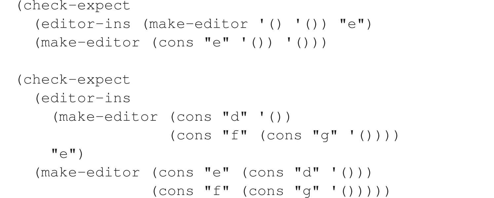
You should work through these examples using the interpretation of Editor. That is, make sure you understand what the given editor means in terms of information and what the function call is supposed to achieve in those terms. In this particular case, it is best to draw the visual representation of the editor because it represents the information well.
The fourth step demands the development of the template. The first argument is guaranteed to be a structure, and the second one is a string, an atomic piece of data. In other words, the template just pulls out the pieces from the given editor representation:
(define (editor-ins ed k)
(… ed … k …
… (editor-pre ed) …
… (editor-post ed) …))
Remember a template lists parameters because they are available, too.
From the template and the examples, it is relatively easy to conclude that editor-ins is supposed to create an editor from the given editor’s pre and post fields with k added to the front of the former:
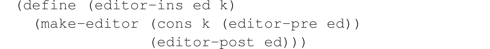
Even though both (editor-pre ed) and (editor-post ed) are lists of 1Strings, there is no need to design auxiliary functions. To get the desired result, it suffices to use cons, which creates lists.
At this point, you should do two things. First, run the tests for this function. Second, use the interpretation of Editor and explain abstractly why this function performs the insertion. And as if this isn’t enough, you may wish to compare this simple definition with the one from exercise 84 and figure out why the other one needs an auxiliary function while our definition here doesn’t.
Exercise 179. Design the functions
; Editor -> Editor
; moves the cursor position one 1String left,
; if possible
(define (editor-lft ed) ed)
; Editor -> Editor
; moves the cursor position one 1String right,
; if possible
(define (editor-rgt ed) ed)
; Editor -> Editor
; deletes a 1String to the left of the cursor,
; if possible
(define (editor-del ed) ed)
Again, it is critical that you work through a good range of examples.
Designing the rendering function for Editors poses some new but small challenges. The first one is to develop a sufficiently large number of test cases. On the one hand, it demands coverage of the possible combinations: an empty string to the left of the cursor, an empty one on the right, and both strings empty. On the other hand, it also requires some experimenting with the functions that the image library provides. Specifically, it needs a way to compose the two pieces of strings rendered as text images, and it needs a way of placing the text image into the empty image frame (MT). Here is what we do to create an image for the result of (create-editor "pre" "post"):
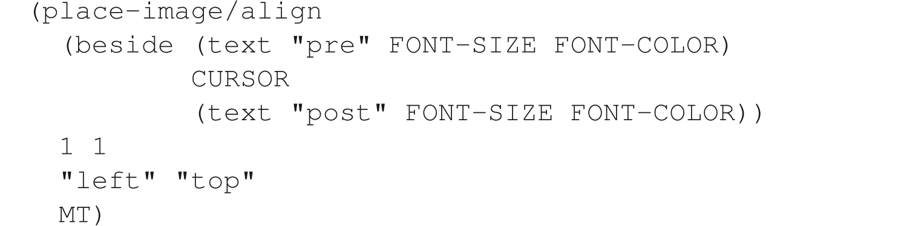
If you compare this with the editor image above, you notice some differences, which is fine because the exact layout isn’t essential to the purpose of this exercise, and because the revised layout doesn’t trivialize the problem. In any case, do experiment in the interactions area of DrRacket to find your favorite editor display.
You are now ready to develop the template, and you should come up with this much:
(define (editor-render e)
(… (editor-pre e) … (editor-post e)))
The given argument is just a structure type with two fields. Their values, however, are lists of 1Strings, and you might be tempted to refine the template even more. Don’t! Instead, keep in mind that when one data definition refers to another complex data definition, you are better off using the wish list.
If you have worked through a sufficient number of examples, you also know what you want on your wish list: one function that turns a string into a text of the right size and color. Let’s call this function editor-text. Then the definition of editor-render just uses editor-text twice and then composes the result with beside and place-image:
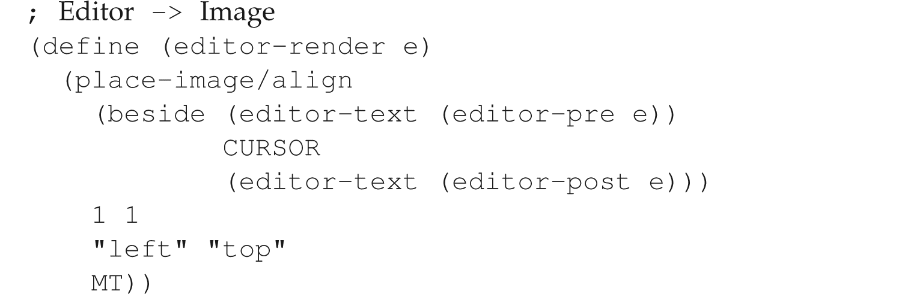
Although this definition nests expressions three levels deep, the use of the imaginary editor-text function renders it quite readable.
What remains is to design editor-text. From the design of editor-render, we know that editor-text consumes a list of 1Strings and produces a text image:
; Lo1s -> Image
; renders a list of 1Strings as a text image
(define (editor-text s)
(text "" FONT-SIZE FONT-COLOR))
This dummy definition produces an empty text image.
To demonstrate what editor-text is supposed to compute, we work through an example. The example input is
(create-editor "pre" "post")
which was also used to explain editor-render and is equivalent to
(make-editor
(cons "e" (cons "r" (cons "p" '())))
(cons "p" (cons "o" (cons "s" (cons "t" '())))))
We pick the second list as our sample input for editor-text, and we know the expected result from the example for editor-render:
(check-expect
(editor-text
(cons "p" (cons "o" (cons "s" (cons "t" '())))))
(text "post" FONT-SIZE FONT-COLOR))
You may wish to make up a second example before reading on.
Given that editor-text consumes a list of 1Strings, we can write down the template without much ado:
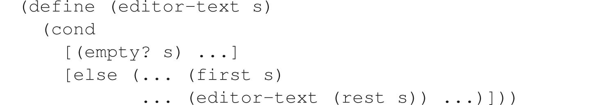
After all, the template is dictated by the data definition that describes the function input. But you don’t need the template if you understand and keep in mind the interpretation for Editor. It uses explode to turn a string into a list of 1Strings. Naturally, there is a function implode that performs the inverse computation, that is,
> (implode
(cons "p" (cons "o" (cons "s" (cons "t" '())))))
"post"
Using this function, the definition of editor-text is just a small step from the example to the function body:
(define (editor-text s)
(text (implode s) FONT-SIZE FONT-COLOR))
Exercise 180. Design editor-text without using implode.
The true surprise comes when you test the two functions. While our test for editor-text succeeds, the test for editor-render fails. An inspection of the failure shows that the string to the left of the cursor—"pre"—is typeset backward. We forgot that this part of the editor’s state is represented in reverse. Fortunately, the unit tests for the two functions pinpoint which function is wrong and even tell us what is wrong with the function and suggest how to fix the problem:
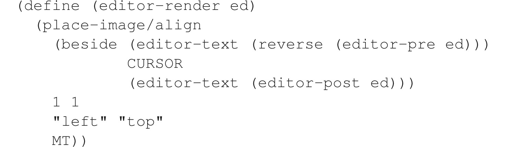
This definition uses the reverse function on the pre field of ed.
Note Modern applications allow users to position the cursor with the mouse (or other gesture-based devices). While it is in principle possible to add this capability to your editor, we wait with doing so until chapter 32.4.